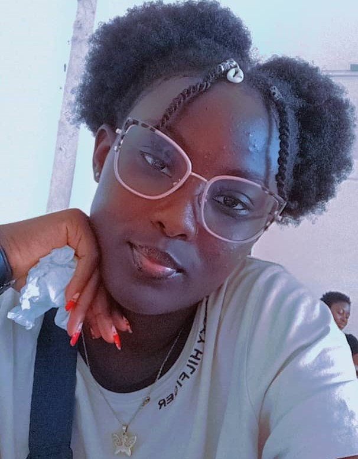

Matricule:24G2047

My name is HOUAMBO YOUFOUTE DORETTE.I was born on the 30 may 2008 at KIIKI.
I am from Mbam and kim Division in the centre region of Cameroon,from the
village Ngambe Tikar.
I am a student in ICT FOR DEVELOPMENT LEVEL 1 in The University of Yaounde 1 .
More passionate about sciences:like everything concerning researches and discoveries.
Also,concerning computer sciences, I love Programming though am not very good yet.I continue moving
ahead and exploring new things;I am very excited the idea of meeting new people and learning new things.
I really hope realising my dreams in the nearest future by God's grace.
Apart from my studies,i have many other hobbies ,like: les Trips, researches,eating,
discussing with friends and relatives,readind the bible,yeah very important.
I also do extrascolar activities volleyball in the Universities' volleyball club.Moreover,
I am Bilingual but the language i prefer most is English.I am also very
attached to the Bible.Because i strongly believe in the existence of God and all his Gifts ans Promises,;
I don't think i could have been where i am today without the Presence of such a God.My battle is that,
everydody should be able to know God Thesame way i have known him,and decide whether he will live with or
without him.
Concerning my aspirations,i've always loved to do Astronomy,Oceanography and Computer sciences
due to the fact that they implie many discoveries, fluctuations ,and is more of fun than work.These activities
permit me to relax and be aware of new world fashions and what is happening arroun us.